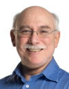

Henry Jay Forman received his Ph.D. in Biochemistry from Columbia University
in 1971. After a post-doctoral position at Duke University, he has held
faculty positions in multiple disciplines at several universities including
the University of Pennsylvania, the University of Southern California and
the University of Alabama, where he was the Chairman of Environmental Health
Sciences. He is now holds appointments at both the University of California,
Merced as Distinguished Professor of Biochemistry and Chemistry and Founding
Faculty and as a Research Professor of Gerontology at the University of
Southern California. Dr. Forman's expertise is in the areas of oxidative
stress and signal transduction and he has over 180 publications and has
been an invited lecturer at many national and international symposia. He
is the President of the Society for Free Radical Biology and Medicine and
Reviews Editor of Free Radical Biology & Medicine. His major research
achievements include the co-discovery of mitochondrial superoxide production
and pioneering work in redox signaling including the mechanisms of induced
resistance to oxidative stress.